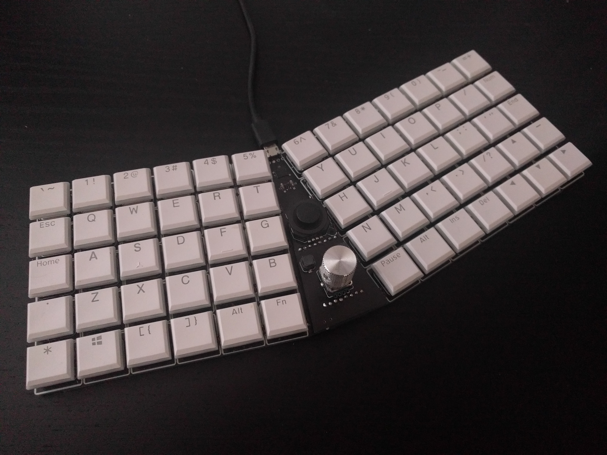
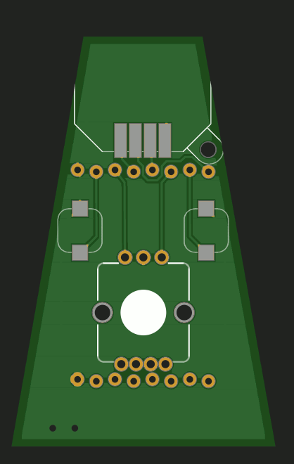
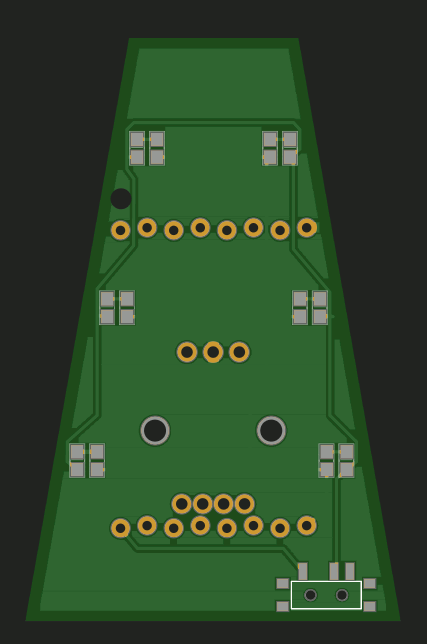
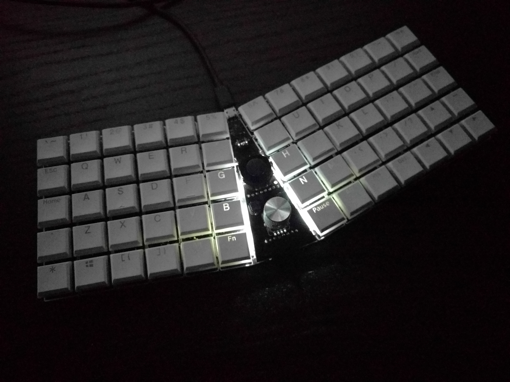

First Module¶
Published on 2021-02-08 in Kamina Keyboard.
Remember how I tricked myself into not diving into the rabbit hole of what could be possibly placed in the middle of this keyboard by making an expansion module header in there? Well, it would be nice to actually have a module to place there. So I designed this:
It’s a basic set: a joystick for mouse emulation, two buttons for mouse clicks, and an encoder knob for scrolling. The PCB was super- basic:
I also placed some LEDs for “backlight” in there, but since I ran out of pins to control it, I just added a simple mechanical switch:
It doesn’t work too great:
Probably side-mounted LEDs would have been better.
I still need to write the code for the encoder, but since CircuitPython has a ready library for it, it shouldn’t be too hard.